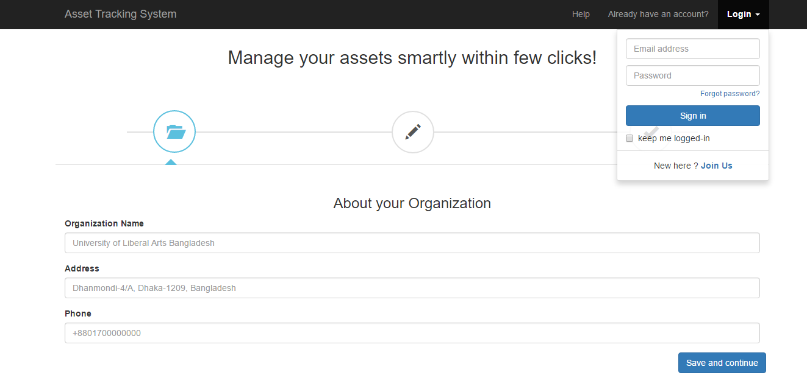

হেল্পার ফাইল
ফর
অ্যাসেট ট্র্যাকিং সিস্টেম
সূচী তালিকা
-
ভূমিকা
অ্যাসেট ট্র্যাকিং সিস্টেম ওয়েব , স্মার্ট ফোন, আই ও এস এবং ডেস্কটপ প্ল্যাটফর্ম এর সহযোগে গঠিত হয় । এই অ্যাপ্লিকেশনটি সম্পদ ও ব্যক্তি সম্পদ নির্ধারিত অবস্থান দ্বারা ট্র্যাকিং যেমন টেবিল , চেয়ার , কম্পিউটার , সরঞ্জাম বা অন্যান্য উপকরণ এর সতর্কতামূলক ব্যবস্থা প্রদান করে । এবং অ্যাপ্লিকেশন সব ধরণের ব্যবহারকারী দ্বারা সম্পদ এর ইতিহাস সম্পর্কিত কার্যক্রম তৈরি করে। আরো সুনির্দিষ্টভাবে উল্লেখ করলে সিস্টেম এর ব্যবহার , রক্ষণাবেক্ষণ , হারিয়ে , ক্ষতিগ্রস্ত ইতিহাস & সম্পদের trackable অবস্থান ও ব্যক্তি রেকর্ড রাখে . প্রথম ব্যবহারকারীদের সম্পদের বিবরণ যোগ & একটি নির্দিষ্ট সম্পদের বিবরণ দেখতে এবং বিশেষ সম্পদের তথ্য এবং এই সম্পদ স্থানান্তরের প্রভাবিত করায় এই সিস্টেম ব্যবহার করা . এই সফটওয়্যার এর ব্যবহারকারীদের অ্যাডমিন & একটি অরগেনাইজেশন / কোম্পানীর পরিচালক যারা তাদের সম্পদ পরিচালনা করতে চাইলে তার এই সার্ভিসটি ব্যবহার করা হবে . আবেদন একাধিক প্লাটফর্ম- ওয়েব , অ্যান্ড্রয়েড অ্যাপ্লিকেশন , ডেস্কটপ অ্যাপ্লিকেশন, আই ও এস উপর নির্মাণ করা হবে . সামগ্রিকভাবে এই সিস্টেম কোম্পানি smartly তাদের সম্পদ পরিচালনার জন্য যে কোন নির্ভুল সমাধান প্রদান .
-
স্থাপন
Write Here
-
ইউজার ম্যানুয়াল নির্দেশিকা
ওয়েব, এনড্রয়েড, আইওএস এবং ডেস্কটপ এর জন্য সফট্ওয়্যার ইনস্টল করার পর ইউজার সাইন ইন, লগ আউট, এসেট এডিট, এড এসেট, এসেট মুছে ফেলা এই সিস্টেম ব্যবহার এর মাধ্যমে এই সকল কাজ করতে পারে।যদি ইউজার পাসওয়ার্ড ভুলে যায় তবে ইউজার ম্যানুয়াল নির্দেশিকা দেখে সম্যাসার সমাধান করতে পারে।এই ইউজার ম্যানুয়াল নির্দেশিকা অনুসরণ করার ফলে ইউজার বুঝতে পারে কিভাবে সাইন ইন, লগ আউট, এসেট এডিট, এড এসেট, এসেট মুছে ফেলতে হবে এবং পাসওয়ার্ড ভুলে গেলে কি করতে হবে।এই ইউজার ম্যানুয়াল নির্দেশিকার মাধ্যমে ইউজার সকল কোম্পানির তথ্য এবং এসেট এর ঘটনা বিবরণ জানতে পারে।
Tab One
Tab Two
Tab Three
Tab Four
3.1 ডেস্কটপ
ডেস্কটপ এর জন্য সফট্ওয়্যার ইনস্টল করার পর ইউজার সাইন ইন, লগ আউট, অ্যাসেট এডিট, এড অ্যাসেট, অ্যাসেট মুছে ফেলা এই সিস্টেম ব্যবহার এর মাধ্যমে এই সকল কাজ করতে পারে।ইউজার এই সকল কাজ আরো সহজে কিভাবে করবে তা আরো পরিষ্কারভাবে বোঝার জন্য নিচে কিছু নিদের্শনা দেয়া হল-
3.1.1. সাইন ইন
১। যদি ইউজার সাইন ইন করতে চায় তবে ওয়েবসাইট এর লিঙ্ক এ নেভিগেশওন বার এ যেতে হবে ।
২। তারপর ইউজার সাইন ইন অপশন এ গিয়ে ক্লিক করবেন।
৩। তখন ইউজার একটি নতুন জানালা খুলবে । সেখানে ইউজার নামের জায়গায় ইউজারনাম আর পাসওয়ার্ড এর জায়গায় পাসওয়ার্ড দিতে হবে ।
৪। সব শেষে সাইন ইন অপশন এ ক্লিক করতে হবে ।
3.1.2. লগ আউট
যদি আপনি লগ ইন পেজ ছেড়ে দিতে চান তাহলে উপরে সাইন আপ বাটন এ ক্লিক করেন। তারপর আপনি সরাসরি লগ আউট পেজ এ চলে যাবেন। যদি আপনি সমস্যা হই তাহলে স্ক্রীন শর্ট গুলো দেখেন.
3.1.3. অ্যাসেট যোগ
১ আপনি যদি কিছু অ্যাড করতে চান তাহলে অ্যাড আসেট এ ক্লিক করুন. ২ তখন আপনি পেজটা পাবেন. ৩ যদি কিছু অ্যাড করার থাকে অ্যাড করুন এবং সেভ করুন.
3.1.4.পাস ওয়ার্ড ভুলে যাওয়া
১. যদি কেউ পাসওয়ার্ড ভুলে যায় তবে “Forget password”এ ক্লিক করতে হবে।
২. এখন নতুন পেজ আসবে এবং ইমেইল এর মাধ্যমে একটা কোডে পাঠানোর কথা বলা আছে।
৩. এখন ইমেইল থেকে কোড কপি করে “টাইপ কোড”লিখা জায়গায় দিতে হবে।
৪. এখন পেজ লগ ইন করার জন্য তৈরি।
3.1.5. অ্যাসেট মুছে ফেলা
১.কিছু রিমুভ করতে চাইলে “ডিলিট বাটান ” এ ক্লিক করতে হবে।
২.এখন যা রিমুভ করতে চাচ্ছেন সেতা সিলেক্ট করতে হবে।
৩. সিলেক্ট হয়ে গেলে ইয়েস বাটান এ ক্লিক করলে অটোমেটিক ডিলিট হয়ে যাবে।
3.1.6. অ্যাসেট সম্পদনা করা
১. অ্যাসেট পেজ এর এডিট বাটান এ ক্লিক করতে হবে।
২. এখন কিছু এডিট করতে চাইলে আই পেজ এ করা যাবে।
৩. এডিট করা হয়ে গেলে “save change”বাটান এ ক্লিক করলে এডিট হয়ে আগের পেজ এ ফিরে যাবে।
3.1.7. কম্পানির তথ্য
কম্পানির নাম : এবিসি আইটি লিমিটেড কম্পানির ইমেইল : abcit@gmail.com কম্পানির ফোন নাম্বার : ০১৭xx xxxxxx
3.1.8.অ্যাসেট ইতিহাস
অ্যাসেট ইতিহাস অতি গুরুত্তপূর্ন জিনিস।কারণ এটা সময়ের সাথে এসেট নিবন্ধনকারীর অ্যাসেট এর কিরূপ পরিবর্তন হচ্ছে তার সম্পূর্ন এবং বিস্তারিত তথ্য প্রদান করে থাকে। বহু সংখ্যক অ্যাসেট এর বিভিন্ন ধরনের কাজের গতিবিধির জন্য এই অ্যাসেট ইতিহাস ইউজারকে একটি নির্দিষ্ট কাজের ধরনের জন্য নির্দিষ্ট জায়গা প্রদান করে থাকে অ্যাসেট ইতিহাসে।
3.2 আইওএস
আইওএস এর জন্য সফট্ওয়্যার ইনস্টল করার পর ইউজার সাইন ইন, লগ আউট, এসেট এডিট, এড এসেট, এসেট মুছে ফেলা এই সিস্টেম ব্যবহার এর মাধ্যমে এই সকল কাজ করতে পারে।ইউজার এই সকল কাজ আরো সহজে কিভাবে করবে তা আরো পরিষ্কারভাবে বোঝার জন্য নিচে কিছু নিদের্শনা দেয়া হল-
3.2.1. সাইন ইন
প্রথমে আপনি লগ ইন পেজ এ যাবে। তারপর আপনি ইউজার বাটন এ ক্লিক করে ইউজার নাম লিখবে , তারপর পাসওয়ার্ড এ ক্লিক করে পাসওয়ার্ড লিখবে।
যদি ইউজার নাম এবং পাসওয়ার্ড মিলে যাই .তারপর আপনি হোম পেজ এ যাবেন। যদি না মিলে তাহলে ভুল ইউজার নাম, পাসওয়ার্ড ভুলে গেছেন তা দেখাবে।
যদি কোন সমস্যা হই তাহলে ক্লিক করুন.
3.2.2. লগ আউট
যদি আপনি লগ ইন পেজ ছেড়ে দিতে চান তাহলে উপরে সাইন আপ বাটন এ ক্লিক করেন। তারপর আপনি সরাসরি লগ আউট পেজ এ চলে যাবেন। যদি আপনি সমস্যা হই তাহলে স্ক্রীন শর্ট গুলো দেখেন.
>>>>>>> 70f76950abcfc08c6581c214dcc06ade2bc60f9c
3.2.3. অ্যাসেট যোগ
১ আপনি যদি কিছু অ্যাড করতে চান তাহলে অ্যাড আসেট এ ক্লিক করুন. ২ তখন আপনি পেজটা পাবেন. ৩ যদি কিছু অ্যাড করার থাকে অ্যাড করুন এবং সেভ করুন.
3.2.4. পাস ওয়ার্ড ভুলে যাওয়া
পাসওয়ার্ড ভুলে গেলে “ফরগেট পাসওয়ার্ড” বাটান এ চাপুন।এরপর “হেভিং ট্রাভেল সাইনিং ইন ” নামক একটা হেডিং আসবে যার মধ্যে তিনটি অপশোন আছে। তা হলঃ “পাসওয়ার্ড জানিনা ”,“ইউজার নাম জানিনা”,“সাইনিং এ অন্য সমস্যা হচ্ছে”।এখান থেকে ঠিক অপশোন এ বাছাই করুন।অপশোন বাছাই এর পর এটা আপনার কাছে এই একাউন্ট এর সাথে সম্পৃক্ত ইমেইল এড্ড্রেস চাইবে।এড্ড্রেসটি লিখুন এবং কন্টিনিউ বাটান এ ক্লিক করুন।তারপর “সেন্ড আ ভেরিফাই কোড” নামক অপশোন পাবেন ইমেইল এর মাধ্যমে।এরপর ইমেইল এডড্রেস এ গিয়ে ভেরিফাই কোডটা কপি করে টাইপ কোড অপশোন এ গিয়ে পেস্ট করে দিন।এখন লগইন করার জন্য কন্টিনিউ করতে পারেন।
3.2.5. অ্যাসেট মুছে ফেলা
কোনো এসেট মুছে ফেলার জন্য “এডিট” বাটান এ ক্লিক করে যা যা মুছে ফেলতে চান তা সিলেক্ট করে “ডিলিট” অপশোন এ কিল্ক করুন।ডিলিট বাটান এ ক্লিক করার পর দুটো ওপশোন আসবে “হ্যা” এবং “না”।“হ্যা” তে ক্লিক করলে যা যা ডিলিট করার জন্য সিলেক্ট করেছেন তা ডিলিট হয়ে যাবে।আর “না” বাটান এ ক্লিক করলে এসেট গুলো আগের মতই থাকবে।
3.2.6. অ্যাসেট সম্পদনা করা
অ্যাসেট এডিট করার জন্য “এডিট” বাটান এ চাপুন।যা এডিট করতে চান এডিট করে “সেভ চেঞ্জেস” অপশোন এ কিল্ক করুন।
3.2.7 কম্পানির তথ্য
কম্পানির নাম : এবিসি আইটি লিমিটেড কম্পানির ইমেইল : abcit@gmail.com কম্পানির ফোন নাম্বার : ০১৭xx xxxxxx
3.2.8. অ্যাসেট ইতিহাস
অ্যাসেট ইতিহাস অতি গুরুত্তপূর্ন জিনিস।কারণ এটা সময়ের সাথে অ্যাসেট নিবন্ধনকারীর অ্যাসেট এর কিরূপ পরিবর্তন হচ্ছে তার সম্পূর্ন এবং বিস্তারিত তথ্য প্রদান করে থাকে। বহু সংখ্যক অ্যাসেট এর বিভিন্ন ধরনের কাজের গতিবিধির জন্য এই অ্যাসেট ইতিহাস ইউজারকে একটি নির্দিষ্ট কাজের ধরনের জন্য নির্দিষ্ট জায়গা প্রদান করে থাকে অ্যাসেট ইতিহাসে।
3.3ওয়েব
ওয়েব এর জন্য সফট্ওয়্যার ইনস্টল করার পর ইউজার সাইন ইন, লগ আউট, অ্যাসেট এডিট, এড অ্যাসেট, অ্যাসেট মুছে ফেলা এই সিস্টেম ব্যবহার এর মাধ্যমে এই সকল কাজ করতে পারে।ইউজার এই সকল কাজ আরো সহজে কিভাবে করবে তা আরো পরিষ্কারভাবে বোঝার জন্য নিচে কিছু নিদের্শনা দেয়া হল-
3.3.1. সাইন ইন
১। যদি ইউজার সাইন ইন করতে চায় তবে ওয়েবসাইট এর লিঙ্ক এ নেভিগেশওন বার এ যেতে হবে ।
২। তারপর ইউজার সাইন ইন অপশন এ গিয়ে ক্লিক করবেন।
৩। তখন ইউজার একটি নতুন জানালা খুলবে । সেখানে ইউজার নামের জায়গায় ইউজারনাম আর পাসওয়ার্ড এর জায়গায় পাসওয়ার্ড দিতে হবে ।
৪। সব শেষে সাইন ইন অপশন এ ক্লিক করতে হবে ।

3.3.2. সাইন আপ
১। যদি ইউজার সাইন আপ করতে চায় তবে ই মেইল আইডি খুলতে হবে ।
২।তারপর ইউজার কে ফার্স্ট নাম এর জায়গায় ফার্স্ট নাম পাশে লাস্ট নাম এর জায়গায় লাস্ট নাম দিতে হবে ।
৩। তারপর ইউজার কে মেইল অ্যাড্রেস দিতে হবে।
৪।তারপর রি মেইল অ্যাড্রেস এর জায়গায় আবার মেইল অ্যাড্রেস দিতে হবে।
৫।তারপর পাসওয়ার্ড দিতে হবে ।
৬।তারপর জন্মতারিখ,বছর,মাস দিতে হবে।
৭।তারপর পুরুষ অথবা মহিলা বেছে নিতে হবে ।
৮। শেষ এ সাইন আপ অপশন এ ক্লিক করতে হবে ।

3.3.3. অ্যাসেট যোগ
১। ইউজার সিং ইন করে ওয়েব পেজ এ গিয়ে অ্যাড অপশন এ গিয়ে আসসেস্ত অ্যাড করতে পারবে ।
২। তারপর সাবমিট করতে হবে ।
৩। ইউজার অন্যদের ট্যাগ করতে পারবে , লোকেশান দিতে পারবে । এভাবে কাযটি শেষ হবে ।

3.3.4. পাস ওয়ার্ড ভুলে যাওয়া
১। যদি পাসওয়ার্ড ভুলে যান, তবে “ফরগেট পাসওয়ার্ড” ক্লিক করুন।
২। তখন আরেকটি পেজ দেখা যাবে। এরপর ঐ পেজ এ “সেন্ড ভেরিফিকেশন লিঙ্ক” এ ক্লিক করুন।
৩। এরপর ইমেইল চেক করুন (যেটি আপনি ইউজারনেম হিসেবে ব্যাবহার করেছেন)। সেখানে আপনি ভেরিফিকেশন লিঙ্কটি পেয়ে যাবেন।
৪। ভেরিফকেশন লিঙ্কটি কপি করুন এবং “টাইপ ভেরিফিকেশন লিঙ্ক” এর বক্স এ পেস্ট করুন। এরপর “সাবমিট” বাটন এ ক্লিক করুন।
এরপর আপনি লগ ইন করতে পারবেন।
3.3.5. অ্যাসেট মুছে ফেলা
এই সম্পদ ব্যয়বহুল ছাড়া মুছে ফেলা হতে পারে .
১.ব্যবহারকারি সম্পদ এর নিচের Delete " বাটন " ক্লিক করুন যদি ব্যবহারকারী অপসারণ করতে চায় .
২.যে একটি টেক্সট বক্স খুলুন এবং হবে জিজ্ঞেস করার পর " আপনি কি নিশ্চিত যে এই সম্পদ মুছে ফেলার ব্যাপারে নিশ্চিত ? "
৩.বার্তা নীচের " হ্যাঁ" ক্লিক করুন.
4. তারপর আপনি স্বয়ংক্রিয়ভাবে পূর্ববর্তী পৃষ্ঠায় ব্যাকআপ হবে.
5. আপনি এই ভাবে আপনার সম্পদ মুছে দিতে সক্ষম হবে .
3.3.6. অ্যাসেট সম্পদনা করা
১।ব্যবহারকারী যে সম্পদটি পরিবর্তন করতে চান, তার নিচের “এডিট” বাটন এ পেষণ করবে।
২। এরপর যা যা পরিবর্তন করতে চান, সেগুল লিখবে।
৩। “সেভ চেঞ্জ” এ ক্লিক করবে।
৪। এরপর আপনি নিজে নিজেই আগের পেজ এ ফিরে আসবেন।
3.3.7. কম্পানির তথ্য
কম্পানির নাম : এবিসি আইটি লিমিটেড কম্পানির ইমেইল : abcit@gmail.com কম্পানির ফোন নাম্বার : ০১৭xx xxxxxx
3.3.8. অ্যাসেট ইতিহাস
অ্যাসেট ইতিহাস অতি গুরুত্তপূর্ন জিনিস।কারণ এটা সময়ের সাথে অ্যাসেট নিবন্ধনকারীর অ্যাসেট এর কিরূপ পরিবর্তন হচ্ছে তার সম্পূর্ন এবং বিস্তারিত তথ্য প্রদান করে থাকে। বহু সংখ্যক অ্যাসেট এর বিভিন্ন ধরনের কাজের গতিবিধির জন্য এই অ্যাসেট ইতিহাস ইউজারকে একটি নির্দিষ্ট কাজের ধরনের জন্য নির্দিষ্ট জায়গা প্রদান করে থাকে অ্যাসেট ইতিহাসে।
3.4 এনড্রয়েড
এনড্রয়েড এর জন্য সফট্ওয়্যার ইনস্টল করার পর ইউজার সাইন ইন, লগ আউট, অ্যাসেট এডিট, এড এসেট, অ্যাসেট মুছে ফেলা এই সিস্টেম ব্যবহার এর মাধ্যমে এই সকল কাজ করতে পারে।ইউজার এই সকল কাজ আরো সহজে কিভাবে করবে তা আরো পরিষ্কারভাবে বোঝার জন্য নিচে কিছু নিদের্শনা দেয়া হল-
3.4.1. সাইন ইন
১। কেউ যদি সাইন-আপ করতে চায়, প্রথমে তাকে একটি ইমেইল আকাউন্ট খুলতে হবে।
২।ইউজারকে নির্ধারিত জায়গায় তথ্য প্রদান করতে হবে।
৩।“Company name” এ আপনার কোম্পানির নাম লিখুন।
৪।“Email” এর অপশনে আপানার ইমেইল অ্যাড্রেস লিখুন।
৫।এখন আপনার পাসওয়ার্ড লিখুন “Password” এর জায়গায়।
৬।যদি আগে থেকেই আপনার আকাউন্ট থেকে থাকে, তাহলে “Already a member? Login” অপশনে যান।
3.4.2. লগ অন
১। প্রথমে ইউজার কে লগইন করতে হবে।
২। লগইন অপশনে যাবেন এবং ক্লিক করবেন।
৩। এর ফলে আপনি একটি নতুন পেইজ পাবেন।
৪. Email এর জায়গায় আপনার ইমেইল এবং Password এর জায়গায় আপনার পাসওয়ার্ড দিন।
৫।এখন Login এ ক্লিক করুন, এবং এখন আপনার প্রয়োজনীয় কাজ করতে পারবেন।
৬।আপনার যদি কোনো অ্যাকাউন্ট না থেকে থাকে তাহলে ‘No account yet? Create one’ অপশনে ক্লিক করুন।
3.4.3. অ্যাসেট যোগ
১।আপনার অ্যাসেট সিস্টেম এ যোগ করার জন্য প্রথমে আপনাকে Add asset অপশনে যেতে হবে।
২।তারপর আপনার অ্যাসেট সম্পর্কে তথ্য প্রদান করুন।
৩।প্রথমে ট্যাগ দিন।
৪।“Type of the asset” এর অপশনে, অ্যাসেট এর টাইপ লিখুন।
৫।“Assigned To” অপশনে , অ্যাসেট টি কোথায় অ্যাসাইন করা হয়েছে সেই সম্পর্কে তথ্য দিন।
৬।লোকেশন প্রদান করুন।
৭।এখন “Submit” বাটন এ ক্লিক করে আপনি আপনার অ্যাসেটটি যোগ করতে পারবেন।
3.4.4.পাস ওয়ার্ড ভুলে যাওয়া
১। যদি পাসওয়ার্ড ভুলে যান, তবে “ফরগেট পাসওয়ার্ড” ক্লিক করুন।
২। তখন আরেকটি পেজ দেখা যাবে। এরপর ঐ পেজ এ “সেন্ড ভেরিফিকেশন লিঙ্ক” এ ক্লিক করুন।
৩। এরপর ইমেইল চেক করুন (যেটি আপনি ইউজারনেম হিসেবে ব্যাবহার করেছেন)। সেখানে আপনি ভেরিফিকেশন লিঙ্কটি পেয়ে যাবেন।
৪। ভেরিফকেশন লিঙ্কটি কপি করুন এবং “টাইপ ভেরিফিকেশন লিঙ্ক” এর বক্স এ পেস্ট করুন। এরপর “সাবমিট” বাটন এ ক্লিক করুন।
এরপর আপনি লগ ইন করতে পারবেন।
3.4.5. অ্যাসেট মুছে ফেলা
১। আপনি যে সম্পদটি বাদ দিতে চান, তার নিচের “ডিলিট” বাটন এ ক্লিক করুন।
২। এরপর একটি টেক্সট বক্স আসবে “আর ইউ সিওর ইউ ওয়ানট টু ডিলিট দিস আসসেট?” অর্থাৎ আপনি কি নিশ্চিত যে আপনি এই সম্পদটি বাতিল করতে চান?
৩। এরপর “ইয়েস” এ ক্লিক করুন।
৪। এরপর আপনি নিজে নিজেই আগের পেজ এ ফিরে আসবেন।
এভাবে আপনি সম্পদটি মুছে ফেলতে পারবেন।
3.4.6. অ্যাসেট সম্পদনা করা
১। আপনি যে সম্পদটি পরিবর্তন করতে চান, তার নিচের “এডিট” বাটন এ ক্লিক করুন।
২। এরপর যা যা পরিবর্তন করতে চান, সেগুল লিখুন।
৩। “সেভ চেঞ্জ” এ ক্লিক করুন।
৪। এরপর আপনি নিজে নিজেই আগের পেজ এ ফিরে আসবেন।
এভাবে আপনি সম্পদ পরিবর্তন করতে পারবেন।
3.4.7. কম্পানির তথ্য
কম্পানির নাম : এবিসি আইটি লিমিটেড কম্পানির ইমেইল : abcit@gmail.com কম্পানির ফোন নাম্বার : ০১৭xx xxxxxx
3.4.8. অ্যাসেট ইতিহাস
অ্যাসেট ইতিহাস অতি গুরুত্তপূর্ন জিনিস।কারণ এটা সময়ের সাথে এসেট নিবন্ধনকারীর অ্যাসেটএর কিরূপ পরিবর্তন হচ্ছে তার সম্পূর্ন এবং বিস্তারিত তথ্য প্রদান করে থাকে। বহু সংখ্যক অ্যাসেট এর বিভিন্ন ধরনের কাজের গতিবিধির জন্য এই অ্যাসেট ইতিহাস ইউজারকে একটি নির্দিষ্ট কাজের ধরনের জন্য নির্দিষ্ট জায়গা প্রদান করে থাকে অ্যাসেট ইতিহাসে।